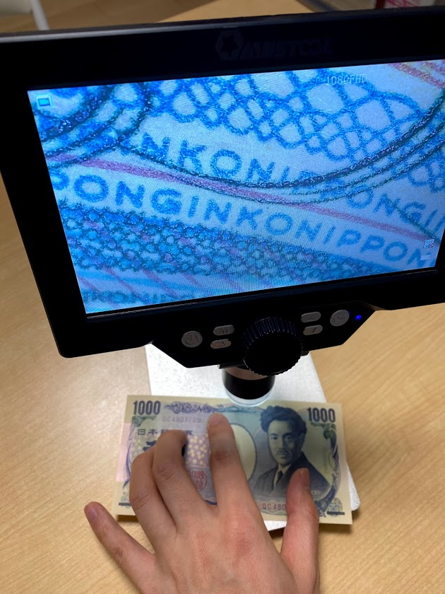
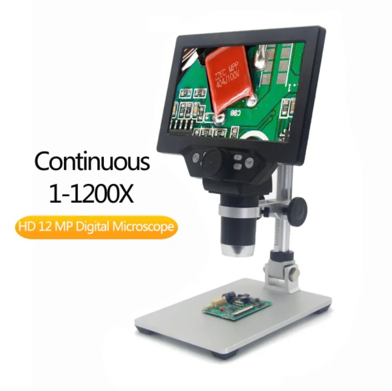
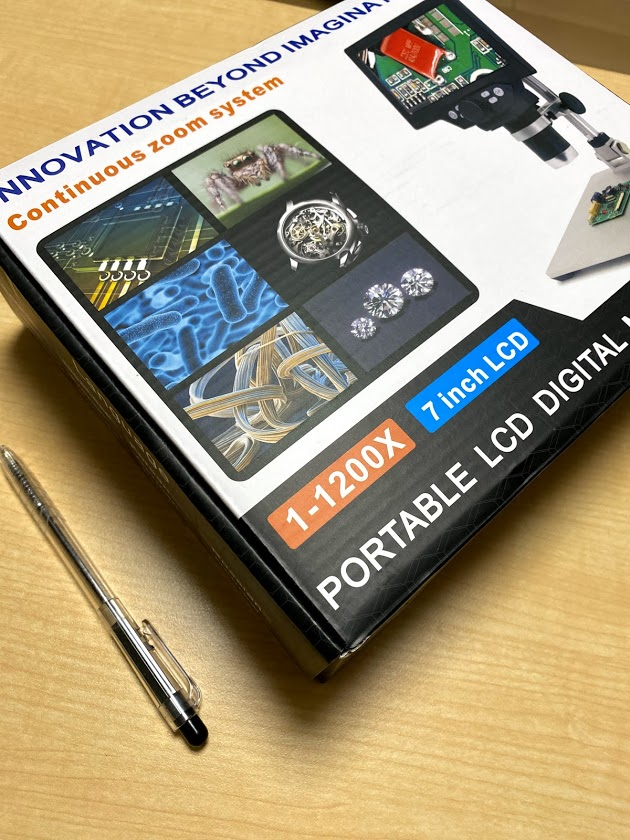
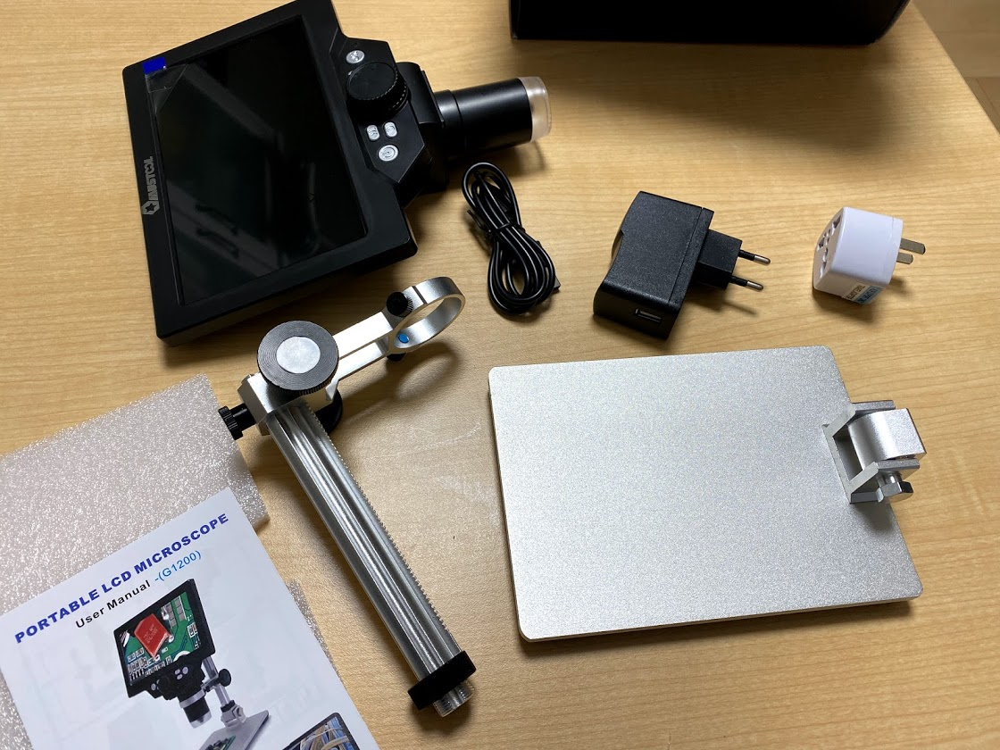
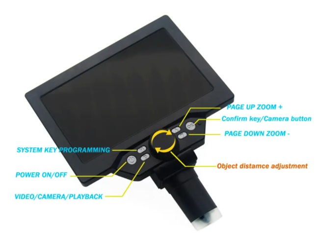
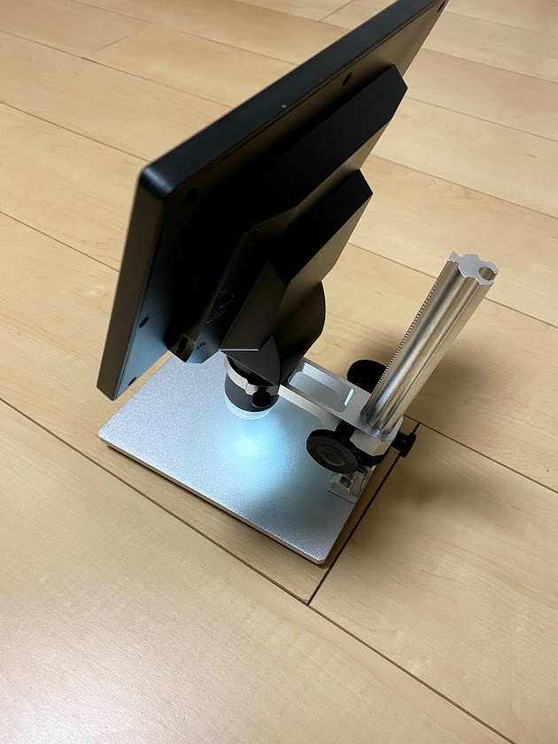
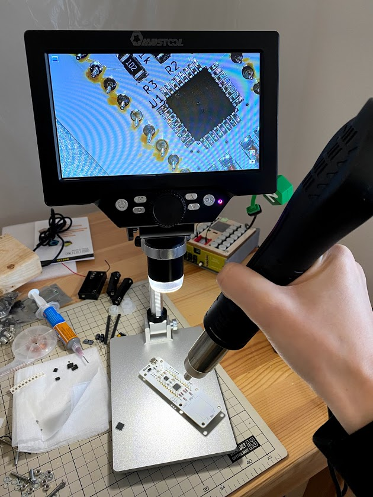

この記事はBanggoodの提供でお届けします。
以前紹介したようにこのブログはBanggoodと提携させていただいており、今回紹介するMUSTOOL G1200はBanggoodからいただいたものとなります。 （MUSTOOL G1200のレビューがしたい！と言ったのは自分なので、Banggoodが無理やり画面付き顕微鏡を押しているわけではなく、inajobの一押しアイテム！、という感じです。）
・・・ といういつもの前置きはそこそこに、MUSTOOL G1200について紹介していきます。
そして、今回もこのブログのために2021/02/28まで利用できるクーポンを頂くことが出来たので、そちらも紹介します。
画面付き顕微鏡とは
MUSTOOL G1200 は画面付き顕微鏡です。
1mm以下の細かい作業をなどをする際に、手元を拡大してみることが出来るという便利なガジェットです。

自分はこれを表面実装の電子部品の実装時のお供にと思っていますが、生き物の観察や、細かい手芸のお供にも利用できると思います。
この手の画面付き顕微鏡は、中国市場に無数に存在しますが、それらすべてを比較検討するのは現実的ではないと感じたので、今回はMUSTOOL社の画面付き顕微鏡に的を絞って紹介します。
MUSTOOL G1200の特徴・仕様
MUSTOOL社はたくさんの種類の 画面付き顕微鏡を販売していますが、このG1200は比較的ハイスペックなものとなっています。

ざっと仕様を列挙します。
- 画面サイズ: 7インチ
- 倍率: 1-1200倍
- バッテリー駆動: あり（ないものもある）
- SDカード対応
- 記録解像度 1080FHD, 720P, VGA
- LED
- USBマスストレージ機能
- 角度がつけられる金属製の台とアーム
この機種の特徴は何といっても7インチの大きな画面です。 電子工作のお供として利用する場合は、画像の記録機能は大して重要な機能ではありません。手元を拡大した映像がディスプレイに出るという事が重要なのです。
外観
結構大きな箱で届きました。

台とアームは金属製でずっしりと重い感じです。ひっくり返らなそうで安心感があります。

アームをいいくらいの力加減で押し倒すと角度をつけることが出来ます。 ゆるゆる立ったらどうしようかと思っていましたが、大丈夫そうです。
バッテリー搭載なのは正直どうなの？と思っていましたが、ケーブルレスで利用できるのが非常に便利です。 電源はUSBから供給できるので、付属のケーブルにこだわる必要はなさそうです。 （5V2AのACアダプタがついていますが、やけに軽く心配です・・）
操作感（ハードウェア）
モニタの下にある大きなダイヤルが倍率調整です。これはアナログな作りになっているようで、これを回すと物理的にレンズが動いているようです。

このダイヤルを回す感覚はちょっと独特で、細かい調整するのは難しそうでした。まぁ自分の使い方の場合は、あらかじめ倍率を適当に設定したら後はいじらないので、特に問題になりません。
倍率を大きくした場合は当然焦点距離が短くなり、倍率を小さくした場合は焦点距離が長くなります。 焦点距離の調整はメタルアームについているダイアルで行います。

このダイアルは細かい調整がしやすくなっているので、フォーカスを合わせるのはストレスになりません。
LEDがレンズの周辺に配置されており、対象物を照らすことで、明るさを確保しています。このLEDは場所を動かすことが出来ないので、反射光や影が気になる場合は補助的な光源を用意したほうが良いかもしれません。
また、アームを台に対して垂直に固定せずに、少し角度をつけることで、LEDの反射光がレンズに返ってこないように調整することもできます。
実際に使ってみた
電子工作の補助
電子工作の補助としては十二分にその役割を果たしてくれました。遅延は感じられず、明るさも十分でした。
LEDがレンズと一体化しているため、場合によっては他にも光源があったほうが良いかもしれません。

倍率にもよりますが、レンズと対象物の距離はそこそこ離れているので、はんだごてなどで作業をする上でもあまり邪魔になりません。
ステージも金属製で安定感があり、余計な突起物などもないので基板などはんだ付けの対象物をストレスなく配置することが出来ました。
バッテリー駆動のためケーブル不要で動作する点も、私のような汚い机で作業するうえでは非常に便利でした。
外部USBカメラ
パソコンにUSBケーブルで接続すると外部カメラとして利用することが出来ます。外部カメラとして利用する際は本体の画面には画像が表示されないのが少し残念ですが、パソコンから顕微鏡の映像を 見ることが出来ます。
この際、遅延が結構あるので、あくまでデモ用で、作業用として使うのは難しいと感じました。
SDカード
本来ならこの製品はSDカードに画像や映像を記録できるはずなのですが、手元のマイクロSDカードではうまく動作させることが出来ませんでした。
まぁ、自分はこの機能を使うつもりがなかったので特に気にしていません。 （何か改善できる情報を知っている人がいれば教えて欲しいです。）
MUSTOOLの画面付き顕微鏡のラインナップとクーポン
調べてみるとMUSTOOLの画面付き顕微鏡には様々な種類がありました。 型番もたくさんあるのですが、同じ型番でも微妙に仕様が違うものなどもあり、一応自分なりにまとめてみました。
（このまとめは各ページの情報を転記しただけで、各機能を保証するものではないです。）
| 型番 | バリエーション | 画面 | 倍率 | バッテリー | 記録解像度 | その他 |
|---|---|---|---|---|---|---|
| G600 | フレキシブルアーム | 4.3inch | 1-600 | 〇 | 1080P, 720P VGA | |
| G600 | メタルアーム | 〃 | 〃 | 〇 | 〃 | |
| G600 | 関節アーム | 〃 | 〃 | 〇 | 〃 | |
| G610 | メタルアーム | 〃 | 50-500 | 〇 | 1920_1080, 1280_720, 640*480 | WiFi |
| G610 | 関節アーム | 〃 | 50-500 | 〇 | 〃 | |
| G700 | 〃 | 50-500 | 〇 | 1920_1080, 1280_720, 640*480 | ||
| G710 | 〃 | 50-1000 | 〇 | 2048_1536, 1920_1080, 1280_720, 640_480 | HDMI, USBマスストレージ | |
| G1000 | メタルアーム | 〃 | 1-1000 | 〇 | 1M,2M,3M,5M,6M,8M,10M | |
| G1000 | ABS+メタルアーム | 〃 | 1-1000 | 〇 | 1M,2M,3M,5M,6M,8M,10M | |
| G1200 | バッテリー有 | 7inch | 1-1200 | 〇 | 1080FHD, 720P, VGA | |
| G1200 | バッテリー無 | 7inch | 1-1200 | × | 1080FHD, 720P, VGA | |
| MT315 | 7inch | 1-2000 | 〇 | 12M |
今回レビューしたのは 「G1200のバッテリー有」です。
個人的にはこれが一押しですが、次点だとG600がよさそうですね。 液晶画面が小さいのと、最大倍率が小さいのがデメリットですが、置き場所が狭い場合や、価格を少しでも抑えたいという場合によさそうです。
「G610 メタルアーム」にはWiFiの機能がついていますが、おそらく技適がついていないので、日本で使うのは難しそうです。購入時は注意してください。 もう一つ気になるなるのが「G710」です。これはHDMIの機能があるようで、画面を外部ディスプレイに出力できるようです。理科の授業などに良いかもしれません。（HDMIは相性問題とかで動かないような予感もしますが・・ どうなんでしょう？）
さてさて、ここまで紹介してきた、MUSTOOLの画面付き顕微鏡ですが、今回Banggoodの提供という事で、すべての機種について、割引のクーポンを頂いています。
この記事を読んで、「自分も似たようなものが欲しい！」と思った方は、ぜひBanggoodでお得に買ってください！
| 型番 | バリエーション | クーポンコード | 割引前 | 割引後 | URL |
|---|---|---|---|---|---|
| G600 | フレキシブルアーム | BGJPmst281 | $36.99 | $31.99 | 製品ページ |
| G600 | メタルアーム | BG661533JP | $45.99 | $39.99 | 製品ページ |
| G600 | 関節アーム | BGJPmst282 | $36.99 | $29.99 | 製品ページ |
| G610 | メタルアーム | BGJPmst284 | $49.99 | $43.99 | 製品ページ |
| G610 | 関節アーム | BGJPmst283 | $43.99 | $38.99 | 製品ページ |
| G700 | BGJPmst285 | $53.69 | $48.99 | 製品ページ | |
| G710 | BGJPmst286 | $79.99 | $69.99 | 製品ページ | |
| G1000 | メタルアーム | BGJPmst287 | $47.99 | $42.99 | 製品ページ |
| G1000 | ABS+メタルアーム | BGJPmst288 | $41.99 | $38.99 | 製品ページ |
| G1200 | バッテリー有 | BGJP1200 | $68.99 | $59.99 | 製品ページ |
| G1200 | バッテリー無 | BGJPmst289 | $69.99 | $63.99 | 製品ページ |
| MT315 | BGJPmst290 | $92.99 | $86.99 | 製品ページ |